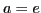
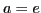

Differentiation of a logarithm
Let5.3
.
Differentiating by the General Rule (§4.7), considering  as the independent variable, we have
as the independent variable, we have
- FIRST STEP.
.
- SECOND STEP5.4.
by item (8), §1.1.
- THIRD STEP.
[Dividing the logarithm by and at the same time multiplying the exponent of the
parenthesis by changes the form of the expression but not its value (see
item (9), §1.1.]
- FOURTH STEP.
.
[When
 . Therefore
,
from §3.11, placing
.]
. Therefore
,
from §3.11, placing
.]
Hence
Since is a function of  and it is required to differentiate
with respect to , we must use formula (5.1),
for differentiating a function of a function, namely,
and it is required to differentiate
with respect to , we must use formula (5.1),
for differentiating a function of a function, namely,
Substituting
the value of
from (5.3), we get
Therefore,
 (equation (VIII) above).
When ,
, and (VIII) becomes
(equation (VIIIa) above).
(equation (VIII) above).
When ,
, and (VIII) becomes
(equation (VIIIa) above).
The derivative of the logarithm of a function is equal to the product of
the modulus5.5of the system of logarithms and the derivative of the function, divided by the function.
david joyner
2008-08-11